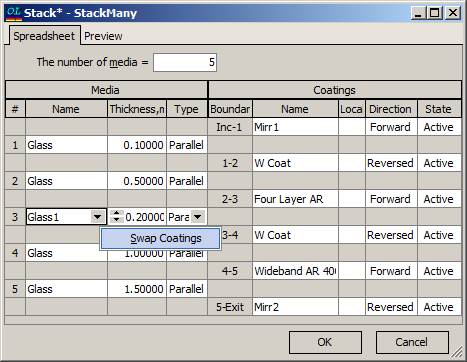

Swap Coatings
Swap Coatings
Navigation: OptiLayer Menu Commands > Data Menu > Stack Database > Stack Editor >
Swap Coatings
` <stack_editor.html>`__ ` <stack_editor.html>`__ ` <idh_back_side_options.html>`__
It is possible to swap coatings placed on the sides of any medium. For this purpose, select a medium and use the right-click menu to perform the Swap command. Application of the Swap Coatings command to Medium #3.

After executing the Swap command, the Stack Editor will change to: